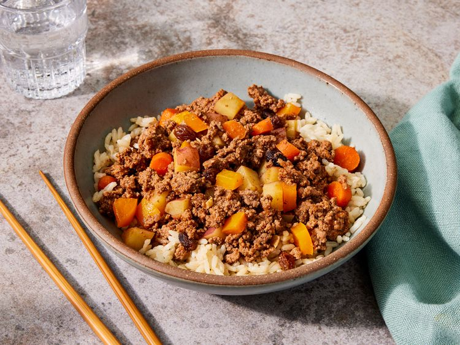

Filipino Beef Giniling (Afritada Style)
This Filipino beef giniling stew is one of my favorite comfort foods. My way of making it is pretty easy and doesn't take too long. Serve with white rice.
- Prep Time: 20 mins
- Cook Time: 20 mins
- Servings: 6
Ingredients
- 1 tablespoon oil, or as needed
- 1 clove garlic, minced
- 2 pounds ground beef
- 2 pounds ground beef
- 1 ½ cups water, divided, or more as needed
- ground black pepper to taste
- 2 medium red potatoes, cubed
- 10 baby carrots, or more to taste, cubed
- 6 tablespoons soy sauce, divided
- ½ cup raisins, or more to taste
- 1 ½ (6.5 ounce) cans tomato sauce with salt (such as Contadina®)
- ½ medium orange bell pepper, diced
- 4 tablespoons white sugar
Directions